🚀 SF 데일리 · 매일 새로운 SF 소설 1페이지 만화
삼체 연재와 별개 시스템 · 1일 12화 2시간 주기 · codex 생성 · 원작 충실 다중 페이지
#031 · 2026-11-20
Francis Stevens 「케르베로스의 머리들」(The Heads of Cerberus, 1919)
2118년 시민들의 목에는 번호가 걸려 있었다 — "그 번호는 여러분의 이름이 아니에요" 한마디가 도시의 목걸이를 전부 벗겼고, 돌아온 골목엔 잡화점 대신 낡은 벽돌벽, 손안엔 별처럼 빛나는 가루 몇 알
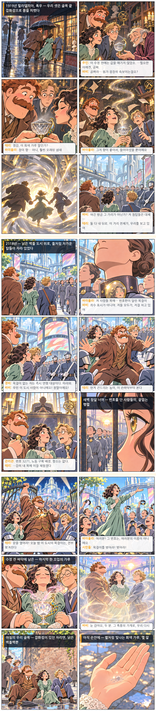
#030 · 2026-11-20
H.G. 웰스 「모로 박사의 섬」(The Island of Doctor Moreau, 1896)
사람과 짐승 사이에 세워진 것은 울타리가 아니라 '법' — 주인 없는 섬에서 그들은 하나씩 네 발로 돌아가고, 배를 저어 나온 남자는 런던의 모자 아래서도 그 눈동자들을 본다

#029 · 2026-11-20
아서 코난 도일 「잃어버린 세계」(The Lost World, 1912)
상자에서 뛰쳐나온 익룡은 강당 창밖 하늘로 사라졌다 — 텅 빈 상자 하나, 증거는 다시 그 하늘에 있다
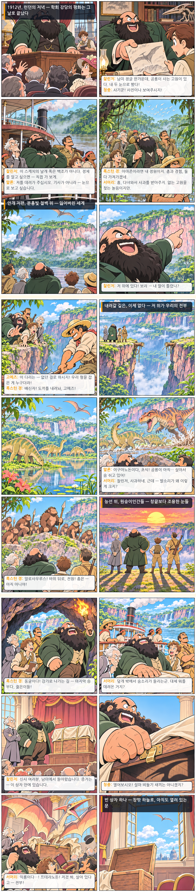
#028 · 2026-11-20
H.G. 웰스 「투명 인간」(The Invisible Man, 1897)
붕대를 벗자 남은 것은 아무것도 아니었다 — 진흙에 잠깐 드러난 젊은 그 얼굴이, 그의 처음이자 마지막 모습

#027 · 2026-11-20
로버트 루이스 스티븐슨 「지킬 박사와 하이드」(Strange Case of Dr Jekyll and Mr Hyde, 1886)
약 한 모금에 낮의 신사가 잠들고, 밤의 신사가 깬다 — 실험실 바닥에는 빈 약병 하나, 그 안에 두 인생이 남아 있다

#026 · 2026-11-20
에드윈 A. 애벗 「플랫랜드」(Flatland, 1884)
두께 제로의 나라가 감춘 방향은 단 하나, '위' — 감옥 창으로 스며든 빛줄기 아래, 정사각형은 아직도 그 차원을 세어 본다

#025 · 2026-11-20
쥘 베른 「지구 중심 여행」(Voyage au centre de la Terre, 1864)
내려간 문은 화산이었고, 올라온 하늘은 이탈리아였다 — 뗏목 한 척으로 지구를 가로지른 세 사람, 그 심장의 불은 아직도 우리 발밑에서 타고 있다
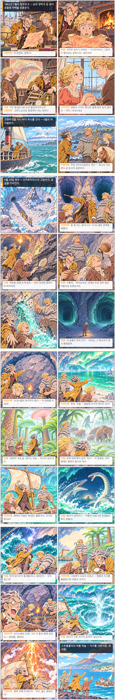
#024 · 2026-11-20
메리 셸리 「프랑켄슈타인」(Frankenstein, 1818)
눈을 뜬 첫 밤, 가장 먼저 도망친 것은 창조주였다 — 이름 없이 태어난 거인은 오늘도 실험실 창가의 불빛 속에 남겨져 있다

#023 · 2026-11-20
E.T.A. 호프만 「모래 사나이」(Der Sandmann, 1816)
쏟아진 것은 눈물이 아니라 톱니바퀴였다 — 시계탑 위에서 그는 웃으며 외쳤다, "빙글빙글 돌아라, 나무인형들아!"

#022 · 2026-11-20
쥘 베른 「지구에서 달까지」(De la Terre à la Lune, 1865)
포탄은 달에 닿지 않았다 — 달의 인력에 붙잡힌 새 위성이 되어, 세 사람과 개 다이애나를 태운 채 아직도 그 하늘을 돌고 있을지 모른다

#021 · 2026-11-19
H.G. 웰스 「수정 알」(The Crystal Egg, 1897)
케이브는 수정을 끌어안은 채 미소 지은 얼굴로 발견되었다 — 지금도 수정 반대편에서, 누군가 이쪽을 들여다보고 있을지 모른다
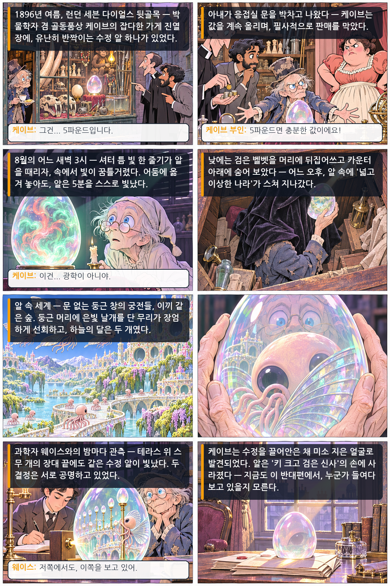
#020 · 2026-11-19
H.G. 웰스 「우주 전쟁」(The War of the Worlds, 1898)
거인들을 무너뜨린 것은 대포가 아니었다 — 이 별의 가장 작은 것들, 세균이었다. 새들은 죽은 거인 위를 날아다닌다

#019 · 2026-11-19
G. 페이턴 워튼베이커 「원자에서 온 남자」(The Man from the Atom, 1923)
우주가 빛 알갱이 하나가 되었을 때 그는 깨달았다 — 되돌릴 상자는 저 속, 아직 손을 내밀고 있는 교수님 곁에 있다
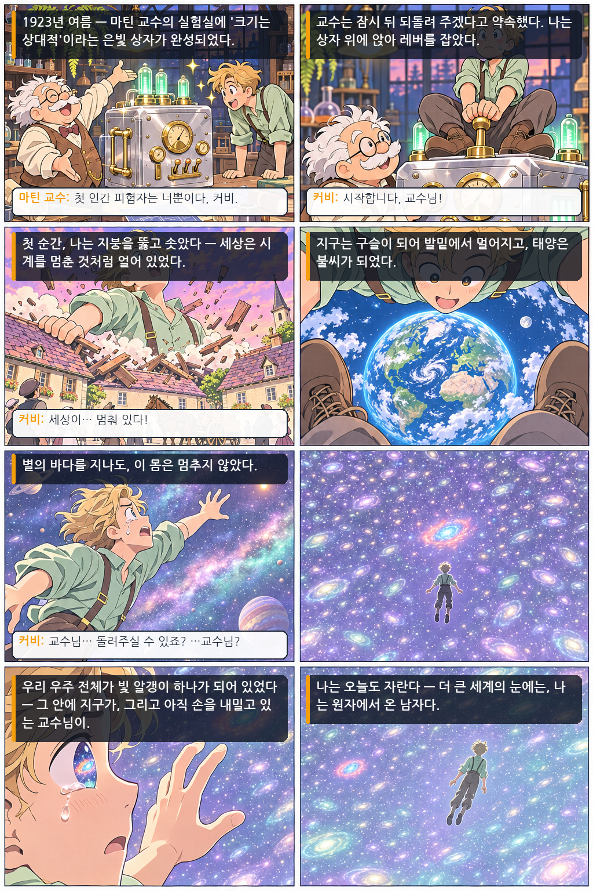
#018 · 2026-11-19
에드거 라이스 버로스 「화성의 공주」(A Princess of Mars, 1912)
죽음이 나를 다시 바르숨으로 데려가 주기를 — 몸은 애리조나 동굴에 둔 채, 나는 오늘 밤도 붉은 별을 바라본다
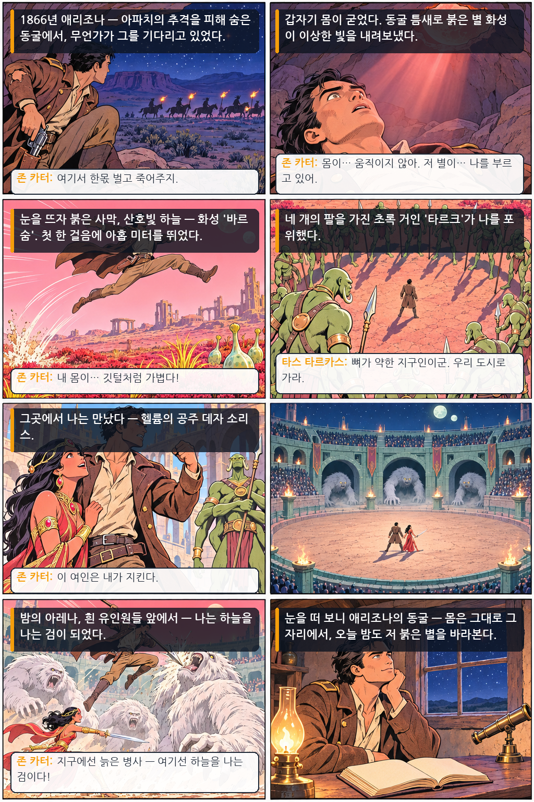
#017 · 2026-11-19
H.G. 웰스 「타임 머신」(The Time Machine, 1895)
하얀 꽃 두 송이를 남기고 그는 다시 떠났다 — 서기 802,701년의 위나를 찾아, 3년째 돌아오지 않았다

#016 · 2026-11-19
몰간 로버트슨 「타이탄호의 침몰」(The Wreck of the Titan, 1898)
'침몰 불가능'이라던 최대 여객선 타이탄의 4월 — 소설은 14년 뒤 '타이타닉'이 될 그 밤을 미리 적어 두었다

#015 · 2026-11-19
아서 코난 도일 「독의 벨트」(The Poison Belt, 1913)
온 세상이 잠든 동안, 산소실의 네 사람만 깨어 있었다 — 세상은 하품하며 깨어났고, 아무도 기억하지 못했다

#014 · 2026-11-19
마크 트웨인 「아서 왕궁의 코네티컷 양키」(A Connecticut Yankee in King Arthur's Court, 1889)
장작더미 위에서 해를 지우겠다 선언한 남자 — 일식이 지나가자, 캐멀롯은 그를 왕 다음가는 '보스'로 맞았다
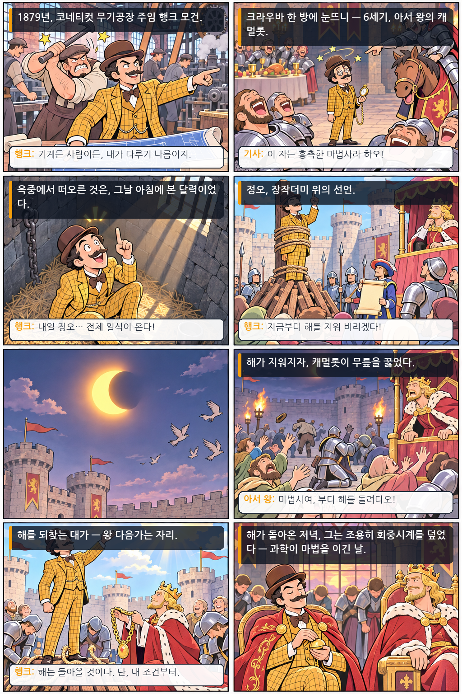
#013 · 2026-11-19
H.G. 웰스 「눈먼 자들의 나라」(The Country of the Blind, 1904)
혼인 조건은 그의 눈을 도려내는 것이었다 — 수술 전날 밤, 그는 사랑을 두고 눈 덮인 고개를 오르기 시작했다

#012 · 2026-11-19
쥘 베른 「해저 2만 리」(1870)
노틸러스호를 덮친 대왕오징어 떼 — 프랑스어로 도움을 청한 사원을 구하지 못한 네모 선장은, 그날 밤 가족 초상 앞에서 소리 없이 울었다
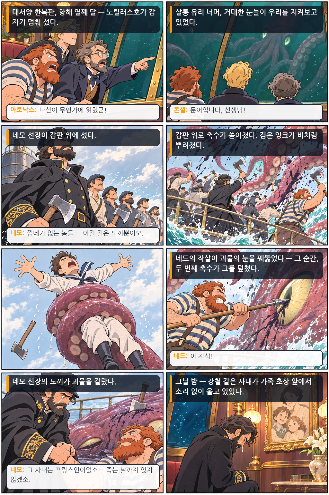
#011 · 2026-11-19
A. 머릿 「달의 웅덩이」(The Moon Pool, 1918)
보름달이 천장 구멍으로 내려꽂히는 밤, 빛의 존재가 솟았다 — 아내는 "저 빛은 따뜻해요"라며 물속으로 사라졌다

#010 · 2026-11-19
레이 커밍스 「황금 원자 속의 소녀」(1919)
금 원자 하나에 도시가 있었다 — 닿을 수 없는 그녀를 찾아, 그는 오늘도 셀 수 없는 금 티끌을 하나씩 뒤진다

#009 · 2026-11-18
잭 런던 「그림자와 섬광」(1903)
보이지 않는 두 천재의 마지막 결투 — 해가 뜨자 모래 위에는 그림자 하나, 빛의 반짝임 하나만 남았다
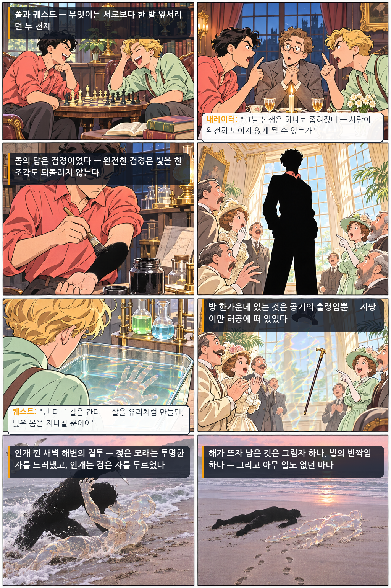
#008 · 2026-11-18
머리 레인스터 「도망치는 마천루」(1919)
건물은 공간이 아니라 시간을 거슬러 내려앉았다 — 돌아온 곳은 떠난 바로 그 순간, 거리는 아무 일 없이 흐르고 있었다

#007 · 2026-11-18
W.H. 호지슨 「밤의 목소리」(1907)
안개 저편에서 들려온 목소리 — 빵 한 자루를 안고 노를 저어 돌아간 남자, 그의 얼굴을 본 사람은 아무도 없었다

#006 · 2026-11-18
아서 코난 도일 「고공의 공포」(1913)
구름 위에는 정글이 있었다 — 찢어진 일기장의 뒷장은 끝내 발견되지 않았다

#005 · 2026-11-18
에드거 앨런 포 「발데마르 씨의 사건」(1845)
죽음과 최면 사이 일곱 달 — "죽어 있다"고 말한 것은 발데마르 본인이었다
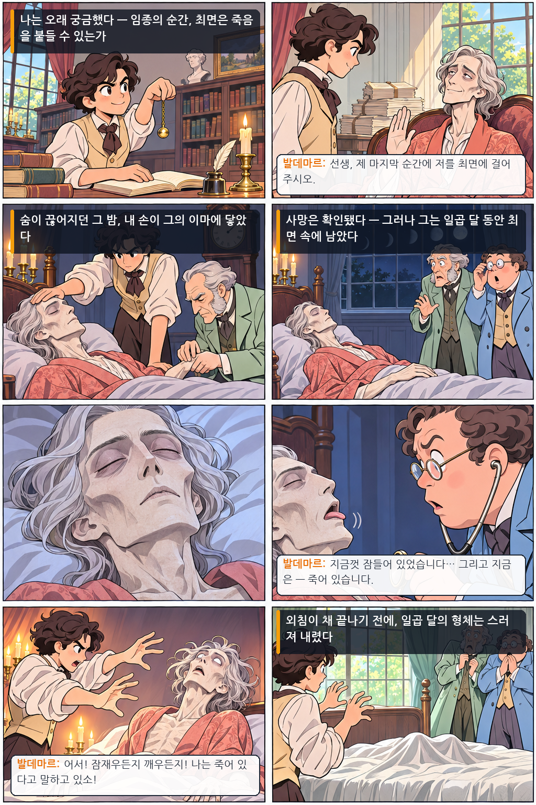
#004 · 2026-11-18
앰브로스 비어스 「목슨의 마스터」(1899)
체크메이트를 선언한 것은 기계였고, 다음 날 아침 "흠" 하고 목을 가다듬은 것은 일꾼이었다 — 그 목소리는 똑같았다

#003 · 2026-11-18
Fitz-James 오브라이언 「다이아몬드 렌즈」(1858)
완벽한 렌즈는 다이아몬드에서 태어났고, 내 우주는 물 한 방울이었다

#002 · 2026-11-17
E.M. 포스터 「기계는 멈춘다」(1909)
기계가 주던 모든 것이 멈춘 날, 인류는 처음으로 블라인드 없는 하늘을 올려다보았다
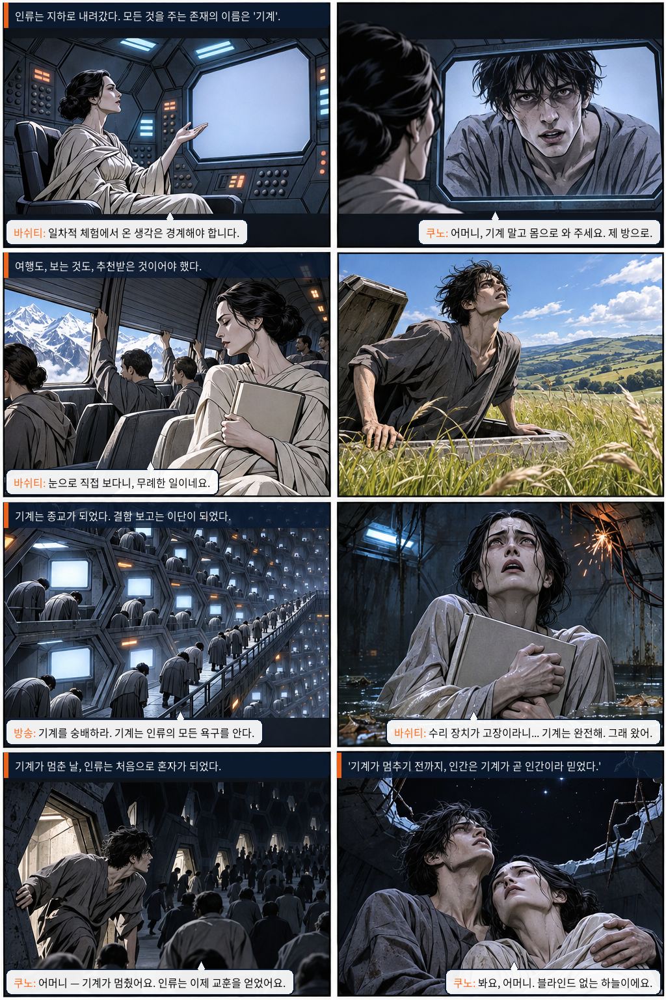
#001 · 2026-11-16
H.G. 웰스 「별」(1897)
지구의 시점에서 그것은 심판이었다. 우주의 시점에서, 그것은 아무 일도 아니었다